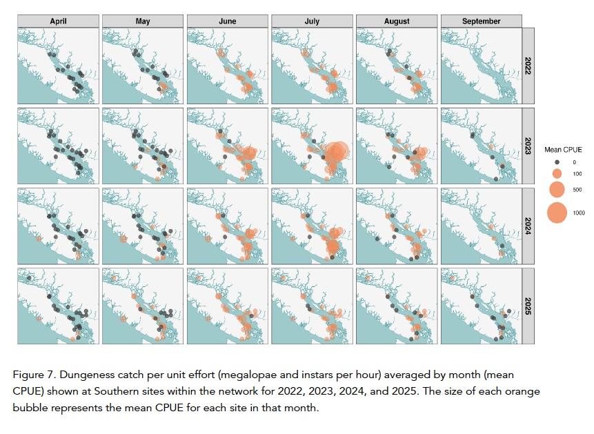

Biomonitoring increasingly fuels formal scientific research. This section will present a selection of interesting stories about biodiversity research on the Coast, and particularly those in which the biomonitoring programs of local non-profits have played or are playing a significant role. More to come!
Research Story
Birds on the move up Mount Elphinstone.
As temperatures rise, mountain species are generally expected to move to higher, cooler elevations to survive, and many are already doing exactly that. Scientists have proposed three main ideas for how this plays out. The "escalator to extinction" suggests a species' range gradually creeps upslope until they simply run out of mountain. The "upslope lean" idea suggests species don't shift their whole range, but instead become more concentrated toward the upper end of where they already live. The "persist-in-place" idea suggests many species simply stay put and adapt.
These ideas are usually tested by tracking whether a species is present or absent in a given area over time. But this misses something important: how many individuals are there? Counting actual numbers gives a clearer picture of whether a population is truly healthy or quietly declining before it disappears from an area entirely. A species that still shows up in surveys could already be in serious trouble if its numbers are falling fast.
Here is a recent local study of birds on the move, including up Mount Elphinstone, that considered both presence/absence and abundance.
This study, led by Ben Freeman, looked at breeding birds in the old-growth forests of the Pacific Northwest over three decades of warming. Ben was a post-doc at UBC at the time he conducted the study. He had come across some mountain bird surveys conducted by F. Louise Waterhouse in the early 1990s, and recognized that he could build on these to test the reigning hypotheses for climate change effects on mountain species.
Basically, surveys were conducted by walking trails, stopping at a series of set stations, and listening to calls to estimate species' presence and abundance. With these data you can estimate elevational range and abundances within those ranges for each species. This is roughly what Waterhouse did in the early 1990s, and Ben and his team repeated in 2023. Contrasting these datasets and comparing them to temperature records allows one to test hypotheses about range shifts associated with climate change, including the escalator to extinction idea.
The species included in the study were Brown Creeper, Chestnut-backed Chickadee, Hairy Woodpecker, Olive-sided Flycatcher, Pacific-slope Flycatcher, Red-breasted Nuthatch, Red-breasted Sapsucker, Sooty Grouse, American Robin, Pine Siskin, Townsend's Warbler, Red Crossbill, Steller's Jay, Vaux's Swift, Hermit Thrush, Varied Thrush, Canada Jay, American Three-toed Woodpecker, Golden-crowned Kinglet, Pacific Wren, Dark-eyed Junco, and Swainson's Thrush. The surveys were conducted at several sites on mountains north and west of Vancouver.
Here is a figure from their 2025 paper in Ecology illustrating some key hypotheses and their results:
Figure from Freeman et al. 2025, Ecology — illustrating key hypotheses and observed results for mountain bird abundance shifts in the Pacific Northwest.
Key Finding
While ranges were not generally shifting, birds' overall peak abundance zones have shifted upslope at roughly the same rate as temperatures have — supporting the "upslope lean" idea. At present, there is little evidence of species heading toward extinction via the escalator effect, with one stark exception: the Canada Jay, a high-elevation bird, has declined sharply. Tracking abundance, rather than just presence/absence, will be important for spotting warning signs early enough to act.
Freeman, B.G. et al. 2025. Pacific Northwest birds have shifted their abundances upslope in response to 30 years of warming temperatures. Ecology, 106:e70193.
Coast Biomonitoring Projects Fuel Science
Shining a Light on Dungeness Crab Larvae
The Sentinels of Change light trap network tracks the arrival of Dungeness crab larvae along the coast. Launched in 2022, this cross-border program connects scientists, resource managers, and coastal communities from Haida Gwaii down to Puget Sound in Washington. Sentinels of Change and Hakai have just released their 2025 Light Trap Network Report, which demonstrates the value of biomonitoring programs on the Coast.
Dungeness crab matter a lot. They've been a cornerstone of coastal Indigenous life for thousands of years and are one of the most valuable fisheries in both Canada and the US. Understanding how their larvae disperse and survive is key to helping managers keep crab populations healthy as oceans change.
Two local sites, Pender Harbour and Gibsons, are included in this study courtesy of the Loon Foundation and BlueAct Marine Society biomonitoring programs.
2025 was the network's fourth year, with 29 sites participating overall. From mid-April through early fall 2025, community partners checked traps every two days, counting and photographing any Dungeness larvae they caught to track size and abundance. Beyond tracking larvae, the network is also exploring how climate change affects young crabs, how crab populations are connected across the coast, and whether light traps can help detect invasive European green crab. While these studies are ongoing and the analyses just ramping up, the scale of the data collected so far is impressive.

Dungeness crab larvae from the Sentinels of Change Light Trap Network, 2025.
Takeaways from the report.
2025 was a low year for Dungeness crab larvae, with peak timing shifting earlier — from July to June — compared to previous years. Despite light catches, data quality improved thanks to strong partner commitment. With four full seasons now collected, the network is building a meaningful long-term dataset. Work is advancing on environmental modelling, population genetics, and climate linkages. In 2026, the network will expand monitoring, deepen analysis, and launch new research questions. Above all, the network's foundation remains its community-based biomonitoring efforts.